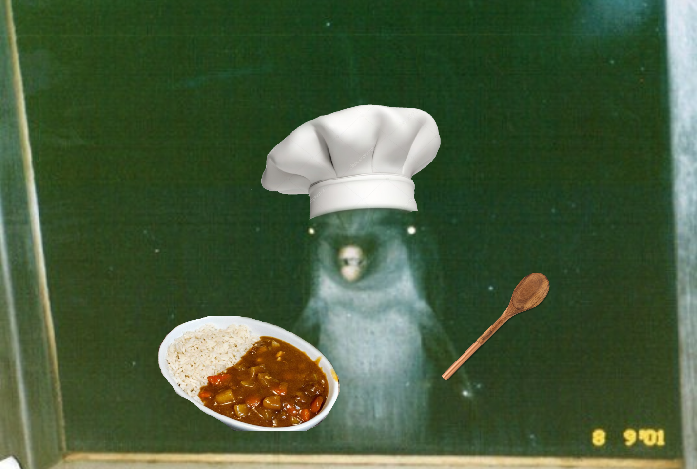

Peng's Curry!

Description
This Japanese Curry recipie will provide a meal for a whole house!
Ingredients
- Potatoes
- Carrots
- Mushrooms
- Onions
- Chicken Broth
- S&B Golden Curry Sauce Mix
- Rice
Steps
- Cube up all vegetable ingredients
- Cook off the raw edge off vegetables
- Pour in Broth to help get fonde off surface of pan
- Bring broth to a simmer and cover with lid for 10 minutes
- In a seperate pot, add water or chicken broth to break down the Golden Curry Sauce Blocks
- After the 10 minutes and blocks are dissolved, combine in the bigger pot
- Allow to thicken to desired viscosity and serve with rice!